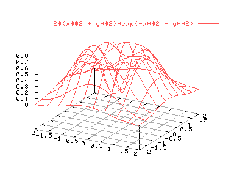
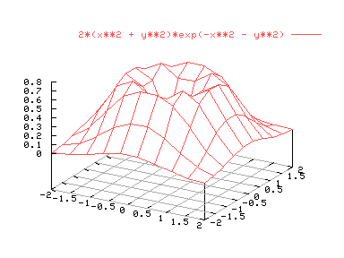

Algunas veces los gráficos 3D pueden ser complicados de interpretar porque se mezclan líneas que están en primer plano con líneas que, si la figura fuera opaca, estarían ocultas. Veamos por ejemplo la siguiente figura.
splot [-2:2] [-2:2] 2*(x**2 + y**2)*exp(-x**2 - y**2)

En esta gráfica se ha usado el comando "set grid" para ver la rejilla inferior. Para intentar hacer más visible la gráfica usaremos el comando "hidden3d":
set hidden3d
replot
